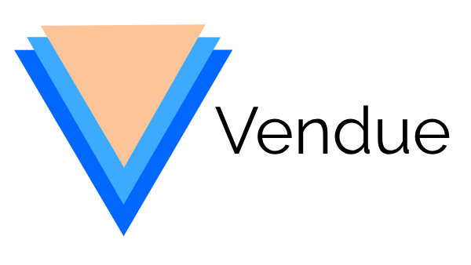

<mat-toolbar>
  <a routerLink='/'></a>

  <!-- This fills the remaining space of the current row -->
  <span class="menu"></span>

  <button mat-button><span class='material-icons'>gavel</span></button>
  <button mat-button><span class='material-icons'>history</span></button>
  <button mat-button><span class='material-icons'>account_circle</span></button>
</mat-toolbar>